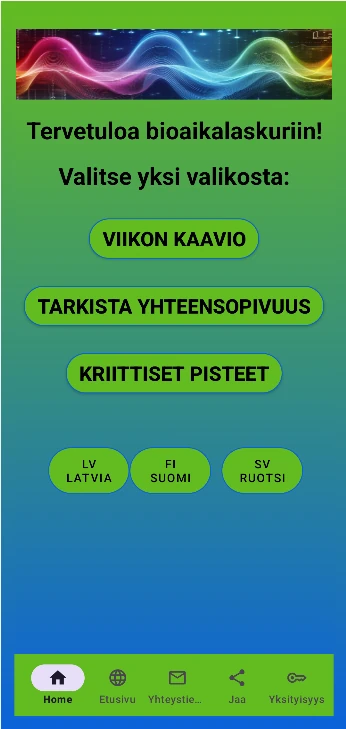

Olet kunnianhimoinen. Rakennat uraa, ihmissuhteita ja etsit tasapainoa dynaamisessa maailmassa.
Mutta mitä jos sinulla olisi pääsy salaiseen karttaan, joka näyttää tarkalleen kehosi ja mielesi optimaaliset toiminta-ajat?
Tutustu Biorytmi-sovellukseen – henkilökohtaiseen elämäsi optimointityökaluun.
Biorytmiteoria väittää, että ihmisen elämää ja hyvinvointia säätelevät kolme kiinteää sykliä, joiden pituudet ovat 23, 28 ja 33 päivää. Nämä syklit alkavat syntymähetkellä ja toistuvat rytmisesti läpi elämän.
Sovelluksen kaaviossa kukin sykli vaihtelee positiivisten ja negatiivisten arvojen välillä:
Ota yhteyttä: manibioritmi@gmail.com
